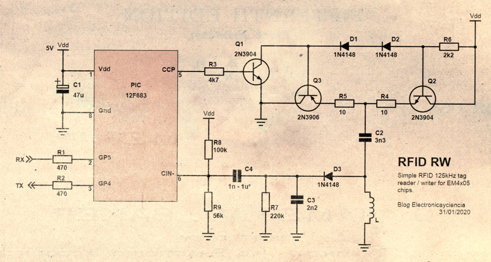
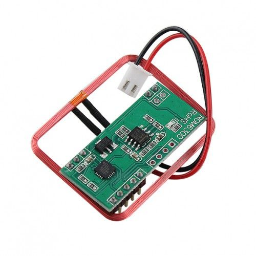

En este artículo vamos a experimentar con RFID de baja frecuencia (125kHz). Haremos nuestro propio lector/grabador usando un microcontrolador y algunos componentes discretos. Diseñaremos la electrónica, el firmware y el software para hablar con un chip regrabable.
| El llavero de la derecha no tiene número, puede hacerse pasar por los otros dos chips. |
{kind=link}
Una cosa más: este es un blog técnico. Si tu única intención es copiar tarjetas, un clonador chino vale $7.45 y sólo tiene dos botones. No necesitas seguir leyendo, sabrás usarlo.
El proceso de clonar un identificador tiene cuatro pasos:
Primero, caracterizar el mensaje: tamaño, velocidad, modulación, etc. Lógicamente, para emularlo necesitaremos un chip capaz de transmitir de igual modo. Por ejemplo, el mensaje del EM4100 consta de 64 bits transmitidos en ASK con codificación Manchester.
Segundo, registrar el mensaje. El EM4100 transmite siempre los mismos bits en bucle. Fácil de imitar. En algunos chips el lector envía un desafío y la respuesta se basa en una operación con áreas de memoria no legibles. Mucho más complicado emularlo. Pero no es el caso del EM4100. Por eso esta tecnología está obsoleta y no debería usarse como control de acceso.
Tercero, escribir el mensaje en un chip. Usaremos un chip regrabable. Aunque un microcontrolador puede actuar también como tag RFID (Barebones PIC RFID tag).
Y cuarto, configurar los parámetros adecuados. Los que habíamos identificado en el paso uno.
Hay dos familias de chips regrabables: el T5577 y el EM4305 (y compatibles con ellos). El T5577 es muy completo y versátil. Más caro, pero prácticamente universal. El proyecto Proxmark3, por ejemplo, sólo soporta ese chip. En la práctica, la diferencia más importante es que el T5577 permite lo mismo que el EM4305 y, además, modulación de frecuencia (FSK). Así podríamos imitar incluso la última tarjeta que vimos, la HID.
El EM4305 es más simple. Su datasheet tiene 19 páginas frente a las 47 páginas del T5577. Nos basta con él y es más sencillo de operar. Y como los protocolos de uno y otro son incompatibles, a partir de ahora me centraré en éste.
El EM4305
Aquí tenéis el datasheet. Lo leemos buscando la respuesta a tres preguntas: ¿Cómo nos comunicamos con él? ¿Cómo grabamos un mensaje? ¿Cómo configuramos la velocidad y modulación?
El fabricante nos presenta este chip enumerando sus características. Dice que tiene 16 registros de 32 bits de memoria. Identificador único de 32 bits, protección por contraseña, bloqueo de escritura, compatible con los estándares de identificación animal, etc. Desde nuestro punto de vista lo más importante es:
- 512 bit EEPROM organized in 16 words of 32 bit
- Two data encodings: Manchester and Bi-phase
- Multi-purpose data rate: 8, 16, 32, 40 and 64 RF clocks
- 100 to 150 kHz frequency range
| Registros del EM4305. Sólo del 4 al 8 son relevantes para este artículo. |
{kind=link}
El registro 4 es el de configuración. Ahí se pone si la modulación la queremos Manchester o Biphase. También la velocidad, indicada en periodos del campo magnético (125 kHz). El valor por defecto es RF/32, significa que cada bit dura 32 periodos (256µs). Dato importante más adelante.
Como curiosidad, hay un bit de configuración llamado pigeon mode. Sirve para fijar unos parámetros concretos, bloquea ciertos bits y deja libres otros. Al parecer, un destino importante de estos chips es el control de tiempo en carreras de palomas mensajeras.
| El EM4305 se usa en carreras de palomas mensajeras. Fuente Aliexpress. |
{kind=link}
El datasheet nos habla también de cinco comandos, entre ellos read y write para leer y escribir valores en los registros.
Nos describe la comunicación con el chip (también llamado transpondedor). Diferenciando entre comunicación de subida (lector-chip) y de bajada (chip-lector) por lo que entendemos que son distintas.
El EM4100 emitía un mensaje nada más acercarlo al lector. El EM4305 hace lo mismo. Se llama modo default read y consiste en transmitir en bucle los bits almacenados en los registros 5 al 13. Y eso es lo que hará hasta que lo interrumpimos enviándole algún comando.
Enviar comandos consiste en cortar el campo magnético en momentos oportunos. Los detalles los veremos más adelante.
Respondiendo a las preguntas del principio: ¿Cómo nos comunicamos con él? Interrumpiendo el campo magnético a intervalos. ¿Cómo grabamos un mensaje? Con el comando write. ¿Cómo configuramos la velocidad y modulación? Escribiendo en el registro de configuración.
Hardware
El EM4095 es un integrado especialmente diseñado para interactuar con el EM4305 y similares. Es muy sencillo de usar. Tan sólo requiere antena, algunos componentes y un microcontrolador. Paso. Me quedo con el microcontrolador sólo.
En estos proyectos de baja frecuencia la velocidad de transferencia también es baja. RF/32 por ejemplo son 4kHz. Se puede procesar en un microcontrolador de propósito general. Para jugar con velocidades no mucho mayores ya necesitaríamos un DSP.
Buscamos un circuito que excite una bobina con una frecuencia de 125kHz, pueda interrumpa el campo cada cierto tiempo (µs), recoja las variaciones en la amplitud y las transforme en señales digitales. A mi se me ocurre el siguiente esquema: un microcontrolador, una etapa excitadora para la bobina y un detector de envolvente como demodulador AM.
|  |
| Esquema principal. Click para ampliar. |
{kind=link}
No es tan bueno como uno comercial, el rango de lectura es menor y a veces falla. Pero cumplirá su objetivo: servir como herramienta para aprender cómo funciona uno de estos chips.
Empezamos por el microcontrolador, un PIC12F683. Por razones que no vienen al caso, los PIC se usan más en la industria que entre aficionados. Aunque a mi, personalmente, me parecen muy prácticos en proyectos sencillos. Sobre todo el 12F683. Con 8 patillas tiene oscilador interno de 8MHz, ADC, módulo PWM, comparador, temporizadores, EEPROM, etc. y es fácil de encontrar.
8 MHz puede parecer mucha velocidad frente a los 125 kHz con que trabajaremos, pero si lo pensáis no es tanto. Tened en cuenta que cada instrucción de PIC lleva 4 ciclos de reloj, además el juego de instrucciones RISC no es especialmente eficiente y para colmo, no voy a programarlo en ensamblador sino en C.
Con el módulo PWM generamos la onda cuadrada de 125 kHz. Sale por su patilla 5 hacia la etapa de salida AB compuesta por Q2 y Q3, cuyo funcionamiento explicamos ya en Leer tarjetas de acceso RFID, sin Arduino. L es la bobina que actúa de antena RFID. Debe formar con C2 un circuito resonante, por lo que la capacidad del condensador se calcula en función de L y la frecuencia exacta.
D3, C3 y R7 forman un detector de envolvente; la forma más fácil (no la mejor) de demodular una señal modulada en amplitud. Es imprescindible añadir un filtro paso alto formado por C4 y R9. Dicho filtro bloquea la tensión en la unión LC -que puede alcanzar decenas de voltios- y deja pasar sólo las variaciones. Ahora tenemos la señal centrada en 0. Para facilitar su detección sumamos una tensión positiva mediante R9 .
El valor de C4 es crítico y depende de la velocidad de transmisión usada: si es muy grande, el filtro será muy lento. Afectará negativamente a la recepción de mensajes a velocidades altas (RF/16). La tensión presente en LC podría llegar a dañar el micro. Por el contrario, si C4 es muy pequeño, la respuesta del filtro será rápida. Pero atenuará mucho los pulsos de velocidades más lentas (RF/64). Un diseño sencillo siempre tiene limitaciones prácticas.
C1 estabiliza la tensión en el integrado frente a posibles picos de consumo. Es bueno colocar un segundo condensador de, por ejemplo, 10nF en paralelo con él y lo más cercano posible al PIC. Así filtraremos el ruido de frecuencias altas.
Por último, los pines Rx y Tx van al PC vía un conversor USB-Serie.
| El circuito anterior construido sobre una protoboard. |
{kind=link}
Protocolo físico
Al igual que cuando tratamos el bus 1-Wire a bajo nivel o el bus I2C a bajo nivel, en el fondo todo se reduce a saber cómo se envía un uno, cómo se envía un cero, cómo se recibe un uno, cómo se recibe un cero.
Empezando por la parte de enviar. Según el datasheet, para sacar al transpondedor del modo default read éste debe percibir un corte del campo magnético, como una señal de escape. Lo llaman First Field Stop. Para estar seguros, el datasheet nos recomienda cortar durante 55 ciclos de 125kHz, o 440µs.
Enviar un uno es sencillo: dejar el campo encendido 32 periodos. Es decir, la velocidad de transferencia del lector al transpondedor es RF/32. Para enviar un cero debemos dejar el campo encendido durante unos 20 periodos y cortarlo después hasta completar los 32 periodos.
Tras recibir el comando, el EM4305 responderá. Así enviamos el comando de leer el registro 0:
| Comunicación con el EM4305 vista en el osciloscopio. Click para ampliar. |
{kind=link}
Abajo tenéis el campo de 125kHz tomado en la unión de L y C2. Arriba, la tensión presente en el comparador del PIC (patilla 6). Venimos del modo default read. Enviamos el First Field Stop (FFS) y a continuación los bits del comando. Tras este sigue una pausa y finalmente la respuesta.
La comunicación entre el lector y el chip tiene unos parámetros fijos. Pero en la respuesta el integrado utilizará los parámetros de velocidad y modulación configurados. De fábrica es modulación Biphase y velocidad RF/32.
El firmware
No es trivial decidir qué se hace en el firmware y qué en el driver (software). Aquí sí, claro; porque es para nosotros. Pero en un producto comercial debe meditarse bien.
Una impresora, por ejemplo. Le mandamos una imagen JPG, un documento DOCX o un PDF y debe saber interpretarlo, traducir la página a un mapa de bits, guardarlo en memoria, y controlar su electrónica para imprimir la imagen en papel. Para hacer todo eso debe tener un micro potente, RAM instalada según la resolución y un firmware muy elaborado. Esta impresora no necesita driver, es totalmente autónoma. Si le enchufamos un pendrive con documentos sería capaz de imprimirlos.
Llega la hora de reducir costes. Somos fabricantes de impresoras. ¿Quitamos hardware de impresión? No, la bajada de calidad iba a ser muy evidente. ¿De dónde recortamos que se note poco? En el firmware. En vez de aceptar documentos en PDF y Word, aceptaremos sólo formato PCL. Como el usuario va a querer seguir imprimiendo documentos, hacemos un driver que convierta a PCL. Como es todo software, no lo limitamos a los formatos corrientes, en su lugar añadimos muchos tipos de ficheros orígenes distintos... y lo vendemos como que nuestra impresora ahora soporta más formatos. Con otra ventaja: como PCL es un estándar, casi todos los sistemas tienen drivers compatibles.
¿Por qué quedarnos ahí? ¿Por qué no hacer por software también el renderizado de la página? Que el driver envíe a la impresora directamente el mapa de bits en lugar de un lenguaje descriptivo intermedio. Así no hay que hacerlo por firmware, ya no necesitaríamos la RAM y el micro podría ser más básico y barato. Irá un poco más lenta... pero sería una impresora muy compacta, económica y consumirá menos electricidad, por tanto más ecológica. Eso vende pero tiene ciertos problemas, complica el driver y lo liga a un modelo concreto de impresora.
Nuestro beneficio está en vender impresoras, no en hacer software. Como no nos es rentable mantener un driver tan complejo en varios sistemas operativos, nos centramos en Windows. ¿Qué pasa si alguien quiere usar esa impresora en un sistema operativo diferente? O, peor aún, ¿qué ocurrirá dentro de unos años cuando el driver sea incompatible con la última actualización?
Lo que he descrito es una Winprinter. A finales de los 90 era frecuente encontrarte winmodems, que no eran sino módems por software. Hoy ocurre menos, pero cierto hardware -barato y popular- nunca funcionará bien en Linux y esta es la razón. Generalmente es más fácil configurar el hardware de gama media/alta. No porque en Linux sean unos elitistas, sino porque el firmware hace lo que debe hacer y su driver es más sencillo. El firmware actúa como pantalla abstrayendo al driver de la electrónica. Cuando el driver está muy ligado al hardware, se vuelve demasiado específico. Con un problema añadido: el fabricante nunca hará público ese nivel de detalle. De hecho, en ocasiones se necesita ingeniería inversa para entender cómo funciona.
|
A la izquierda un Winmodem. El ahorro en componentes es a costa de un driver complejo y propietario. A la derecha un módem completo. Fuente: Wikipedia |
{kind=link}
Volviendo a nuestro proyecto, la idea es escribir un firmware lo más ligero posible y hacer por software todo lo demás.
El lector/grabador sólo sabrá de bits. El PC le mandará un buffer y le dirá que envíe los 12 primeros bits y que lea una respuesta de 20. El micro los enviará, recuperará la respuesta y la mandará de vuelta. Sin saber qué ha enviado, ni si ha ido bien o ha ido mal. Aquí tan sólo entendemos de impulsos eléctricos, la interpretación se hace más arriba.
Necesitaremos, al menos, funciones para:
- Enviar el FFS (First Field Stop), un 1 y un 0.
- Recibir bits en modulación biphase.
- Enviar el grupo de bits que se le mande desde el PC.
- Leer un grupo de bits y mandarlo al PC.
- Interpretar los comandos básicos del dispositivo.
Os lo dejo aquí en este enlace de GitHub. También está el hex, por si os interesa probarlo y no tenéis compilador.
La comunicación con el PC será vía puerto serie. Podría haber sido bluetooth o WiFi con un módulo apropiado, pero hoy usaremos un conversor USB a Serie. No obstante el 12F683 no tiene UART, es emulada. Así que simplificamos ¿es suficiente con comandos de una letra?
Necesitaremos, al menos, comandos para:
- Enviar al PC la identificación del dispositivo. Debe incluir la versión del firmware instalada. Así el driver puede reconocerlo. Lo llamaremos i.
- Enviar un grupo de bits (un comando) al transpondedor, leer la respuesta y devolverla al PC. Enviaremos un buffer y esperaremos otro buffer. Se llamará c y necesitaremos al menos indicar cuántos bits enviar y cuántos recibir.
- Recibir un grupo de bits sin enviar nada. Servirá para leer el mensaje de nuestro chip en modo default read. Lo llamaremos r.
- Encender/apagar el campo magnético, fijar la velocidad de lectura, modificar los umbrales del comparador, activar el modo debug, etc.
¿Y si el driver envía un comando no reconocido? Pensemos cómo reportar errores. Por ejemplo devolveremos el valor 0 si reconocemos el comando, lo ejecutamos y fue todo bien; 1 si reconocemos el comando, lo intentamos ejecutar pero algo falló; y 255 si ni siquiera conocemos ese comando.
En cuanto a leer del chip, me gusta Biphase porque es independiente de la polaridad. Un paso largo es un paso largo ya sea positivo o negativo. También es fácil ver si empezaste a leer en un momento inoportuno porque puedes detectar ese error.
- Monitorizamos el nivel lógico de la línea. Y esperamos a que haya un cambio.
- En este primer cambio empezamos a cronometrar hasta que cambie de nuevo.
- Hay dos posibilidades que tarde un periodo o un semiperiodo. Si tarda un periodo entero, hemos recibido un 1. Ya está. Si tarda sólo un semiperiodo podría ser un 0. Nos anotamos "medio cero" y esperamos al siguiente cambio.
- Si transcurre un semiperiodo, hemos recibido un 0. Pero si hubiera un periodo entero, entonces es un error de lectura.
| Algoritmo de lectura Biphase en un microcontrolador. |
{kind=link}
¿Y si la codificación real que envía el chip es Manchester y no Biphase? Sin problema: nosotros lo leemos en biphase igualmente y ya traduciremos el mensaje por software. Es más fácil eso que implementar dos decodificadores diferentes en el firmware.
Protocolo lógico
Nuestro circuito envía unos y ceros a un chip y nos dice los unos y ceros que recibe del chip. Digamos que conocemos los fonemas del idioma. Pero debemos aprender palabras y frases si queremos comunicarnos.
Para mandar un comando interrumpimos el default read con un First Field Stop, y seguidamente siempre ponemos un cero. Después vendrá el comando con sus parámetros.
El EM4305 maneja tres estructuras de datos. Una para los comandos. Tiene 4 bits, 3 bits del comando empezando por menos significativo y un bit de paridad par.
| Estructura para los comandos. Fuente: datasheet. |
{kind=link}
Los bits cc0, cc1 y cc2 dependerán del comando en cuestión:
| Comandos del EM4305. Fuente: datasheet. |
{kind=link}
Una segunda estructura, de 7 bits, para las direcciones de los registros. Se utiliza por ejemplo en los comandos read o write. Como tenemos 16 registros necesitamos al menos 4 bits, primero el menos significativo. Luego vienen dos bits reservados para uso futuro (que siempre son cero), y al final un bit más de paridad par como antes.
| Estructura para direcciones de memoria. Fuente: datasheet. |
{kind=link}
Y la tercera estructura, datos, es la más compleja. Son 45 bits y se usa para enviar el valor de un registro. Como el medio de comunicación no es muy fiable, han previsto un mecanismo de paridades parciales para asegurar la detección de errores. ¿Se podría haber hecho con un CRC? También. Los bits D0 a D31 son los bits de datos, los P son paridad por filas y los PC paridad por columnas. Ambas pares.
| Estructura para datos. Fuente: datasheet. |
{kind=link}
Con estas palabras ahora formamos frases. Para leer el registro 0 enviaríamos el FFS y un 0, luego la estructura para el comando read (1001), y después la estructura de dirección 0 (0000000). Ese es el comando que habíamos enviado cuando vimos esta imagen:
| Envío del comando READ(0) y recepción de la respuesta. |
La respuesta empezará siempre con uno de estos dos valores, a los que llama preamble. Si el preamble es 00001010 significa ejecución correcta. Si es 00000001 significa error. Ojo que el preamble lo ha podido mandar en Manchester o en Biphase, según cómo esté configurado.
En este caso nos ha dado 00001010, ok. A continuación nos envía el valor del registro usando para ello la estructura de datos.
Para escribir en un registro, habríamos enviado la estructura del comando write, luego la estructura de dirección correspondiente, y después la estructura de datos con el valor que queramos tal como se describe en este esquema:
| Esquema de los comandos read y write. Fuente: datasheet. |
{kind=link}
El software
¿Recordáis cómo hemos ido simplificando el firmware y dejándole esa complejidad a nuestro yo del futuro?
Pues como cabía esperar, nos ha quedado un software algo complejo, sólo voy a dar algunas pinceladas. Lo tenéis completo en GitHub: em4205.py.
Hay un conjunto de cosas básicas que hemos decidido hacer en el software:
- Interactuar con el firmware por el puerto serie haciendo uso de los comandos descritos anteriormente. Codificar los mensajes hacia y desde el grabador.
- Identificar el lector. Configurarlo a la velocidad necesaria.
- Generar las estructuras de datos que hemos visto antes para los comandos, las direcciones y los datos. Esta última además de generarla, también debe saber decodificarla.
- Componer los parámetros para cada comando y entender su respuesta.
- Traducir a Manchester el mensaje que hemos leído en Biphase.
Ahora bien, el software está tan acoplado al firmware que uno no hace nada sin el otro. Este mismo programa no nos serviría para controlar un grabador de otra marca, ni nuestro grabador podría funcionar sin este driver.
La cuestión es si todo junto cumple el objetivo que nos habíamos puesto: por un lado aprender y por el otro...
Clonar un identificador
El primer paso era caracterizar el mensaje. Así que empezamos leyendo en modo default read la tarjeta origen. Los parámetros por defecto de nuestro lector son Biphase y RF/32. Nos da eso:
D:\> py -i .\em4205.py
Electronicayciencia's EM4205/EM4305 writer. v1.02.
>>> read_stream()
497323236409786642155382248146820840100456150797347717440463976893159497012533375533055
>>>
El mensaje en decimal no nos dice nada, así que lo formateamos en binario:
>>> print("{0:0288b}".format(read_stream()))
1111111111111111111111111111111111111111111111111111111111111111
1111111111111111111111111111111111111111111111111111111111111111
1111111111111111111111111111111111111111111111111111111111111111
1111111111111111111111111111111111111111111111111111111111111111
11111111111111111111111111111111
No sé... muchos unos. La velocidad no es correcta. Probaremos con RF/64.
>>> reader_datarate(64)
384
>>> print("{0:0288b}".format(read_stream()))
1000011110111001110101011010000100101011111011000000001000000010
1000011110111001110101011010000100101011111011000000001000000010
1000011110111001110101011010000100101011111011000000001000000010
1000011110111001110101011010000100101011111011000000001000000010
10000111101110011101010110100001
>>>
Sí, mejor. Un patrón de unos y ceros que se repite en bucle. Pero los mensajes del EM4100 empezaban por nueve unos seguidos... y yo aquí no los veo. ¿Y si lo transformamos a Manchester? A propósito, no esperéis que el mensaje cuadre con el de arriba porque el lector empieza a leer a partir del primer uno que encuentra. Por tanto el buffer estará rotado.
>>> print("{0:0288b}".format(biphase2manchester(288, read_stream())))
000000011000001010010111010011001001111100011001010110
1111111110000000011000001010010111010011001001111100011001010110
1111111110000000011000001010010111010011001001111100011001010110
1111111110000000011000001010010111010011001001111100011001010110
111111111000000001100000101001011101001100
>>>
¡Bien! Ya tenemos el mensaje.
En el artículo Leer tarjetas de acceso RFID, sin Arduino habíamos decodificado lo que significa ese mensaje, pero ahora sólo nos interesa reproducirlo tal cual.
Hacemos una función para que nos devuelva el mensaje (64 bits junto a los nueve unos):
>>> keyfob_64_manchester()
1111111110000000011000001010010111010011001001111100011001010110
>>>
Tenemos que conseguir que el EM4305 nos devuelva este mismo mensaje en modo default read. Si probamos con un chip nuevo, los parámetros por defecto son RF/32, biphase y el mensaje es todo ceros:
>>> read_stream()
Traceback (most recent call last):
File "<stdin>", line 1, in <module>
File ".\em4205.py", line 729, in read_stream
raise TransponderError("Empty message")
__main__.TransponderError: Empty message
>>>
Del modo default read, el datasheet dice lo siguiente:
In Default Read mode, the EM4205/4305 sends continuously its memory data starting from Word 5 and finishing with the last word according to the configuration word settings. After sending the last bit of the last word, readout continues without interruption with the first bit of Word 5.
Numeramos los bits del mensaje en el mismo orden que los recibimos:
0 0 1 2 3 4 4 5 6
0 8 6 4 2 0 8 6 3
1111111110000000011000001010010111010011001001111100011001010110
Debemos poner el primer bit que queremos que se envíe (el numero 0) en el bit menos significativo del registro 5. Este registro albergará los 32 primeros bits del mensaje, hasta el bit 31. El siguiente bit, el 32 hay que ponerlo en el bit menos significativo del registro 6 y así hasta el 63.
Algo así:
3 0
1 0
Registro 5 10100101000001100000000111111111
6 3
3 2
Registro 6 01101010011000111110010011001011
Lo escribimos así y probamos:
>>> write(5, 0b10100101000001100000000111111111)
>>> write(6, 0b01101010011000111110010011001011)
>>> dump_all()
...
Word at position 5: 0xa50601ff (10100101000001100000000111111111)
Word at position 6: 0x6a63e4cb (01101010011000111110010011001011)
Word at position 7: 0x00000000 (00000000000000000000000000000000)
Word at position 8: 0x00000000 (00000000000000000000000000000000)
Word at position 9: 0x00000000 (00000000000000000000000000000000)
Word at position 10: 0x00000000 (00000000000000000000000000000000)
Word at position 11: 0x00000000 (00000000000000000000000000000000)
Word at position 12: 0x00000000 (00000000000000000000000000000000)
Word at position 13: 0x00000000 (00000000000000000000000000000000)
...
A continuación configuramos la modulación Manchester y la velocidad RF/64 igual que en el original:
>>> config_datarate(64)
>>> config_encoder("manchester")
>>> print("{0:0288b}".format(biphase2manchester(288, read_stream())))
0010111010011001001111100011001010110
0000000000000000000000000000000000000000000000000000000000000000
1111111110000000011000001010010111010011001001111100011001010110
0000000000000000000000000000000000000000000000000000000000000000
11111111100000000110000010100101110100110010011111000110010
Aún nos falta una cosa: hay ceros entre medias. ¿Qué sucede? Por defecto se envían los registros 5, 6, 7 y 8. Y estos los habíamos dejado a cero. Aunque en el EM4305 se puede configurar dónde queremos que termine el mensaje y ponerlo en el 6, es más fácil replicar en los registros 7 y 8 el contenido de los anteriores.
>>> write(7, 0b10100101000001100000000111111111)
>>> write(8, 0b01101010011000111110010011001011)
>>> dump_all()
...
Word at position 5: 0xa50601ff (10100101000001100000000111111111)
Word at position 6: 0x6a63e4cb (01101010011000111110010011001011)
Word at position 7: 0xa50601ff (10100101000001100000000111111111)
Word at position 8: 0x6a63e4cb (01101010011000111110010011001011)
Word at position 9: 0x00000000 (00000000000000000000000000000000)
Word at position 10: 0x00000000 (00000000000000000000000000000000)
Word at position 11: 0x00000000 (00000000000000000000000000000000)
Word at position 12: 0x00000000 (00000000000000000000000000000000)
Word at position 13: 0x00000000 (00000000000000000000000000000000)
...
>>> print("{0:0288b}".format(biphase2manchester(288, read_stream())))
0011001001111100011001010110
1111111110000000011000001010010111010011001001111100011001010110
1111111110000000011000001010010111010011001001111100011001010110
1111111110000000011000001010010111010011001001111100011001010110
1111111110000000011000001010010111010011001001111100011001010110
1111
¡Ahora sí! Veamos si la función que hemos definido antes devuelve el mismo mensaje para los dos chips.
Con la original:
>>> keyfob_64_manchester()
1111111110000000011000001010010111010011001001111100011001010110
Con la copia:
>>> keyfob_64_manchester()
1111111110000000011000001010010111010011001001111100011001010110
Parecen idénticos. Pero... un momento, estamos haciendo todas las pruebas con un lector/grabador programado por nosotros mismos. ¿Hasta qué punto nos podemos fiar? No tengo un torno de verdad para probar, pero sí un lector comercial tipo RDM6300:
|  |
| Lector comercial RFID 125kHz. Fuente: Aliexpress. |
{kind=link}
Con ayuda de un sencillo programa (que os dejo en GitHub: rdm6300.py) comprobaremos si este lector también da la misma lectura para el original y la copia. Probaré a suplantar al Sr. Jiminis con mi llavero amarillo.
| Control de acceso simulado. Se identifica al Sr. Jiminis con ambos dispositivos. |
{kind=link}
Suficiente. Confío que os haya resultado interesante esta revisión del mundo RFID de baja frecuencia, microcontroladores y software. Me despido no sin antes recomendar que, si aún estáis usando esta tecnología, migréis a otra más sofisticada.
Os dejo el software, imágenes y otros archivos auxiliares en GitHub: electronicayciencia/rfid-rw.
{kind=link}